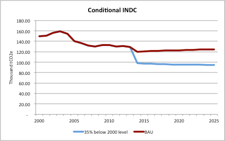

Type of INDC: The Federated States of Micronesia (FSM) commits to reduce GHGs emission in percentage terms on a base year target.
Unconditional: The FSM commits to unconditionally reduce by 2025 a 28% its GHGs emissions below emissions in year 2000.
Conditional: Similarly, subject to the availability of additional financial, technical and capacity building support from the international community, the FSM could do by 2025 an additional reduction up to 35% below emissions in the 2000 base year.
Type: Sectoral Targets
Reference year or period:
Target year: 2025
Scope and coverage:

Planning processes
This INDC was developed through a stakeholder consultation process involving representatives of the National Government, the four FSM State Governments, Agencies and representatives from the private sector, civil society and non- government organizations. It builds upon existing renewable energy and transport targets and policies.
Assumptions and methodological approaches
| GWPs used | Global Warming Potential on a 100 year timescale in accordance with the IPCCs 4th Assessment Report. |
| Inventory methodology | The FSM GHG inventory for year 2000 contained in the Second National Communication utilized the revised 1996 IPCC Guidelines. |
| Land sector emissions | N/A |
| International market mechanisms | FSM does not intend to use international market mechanisms. |
| Baseline | BAU scenarios for the electricity generation and transport sub-sectors were developed using the tool ‘Long-range Energy Alternative Planning System’ (LEAP). The following data was used in the LEAP model:
Current electricity rate: International Renewable Energy Agency (IRENA) Report (2011) Historical electricity use:
|
| Mitigation effects | Individual assumptions were made for the mitigation scenarios. These can be found in the technical report ‘Electricity Sector Analysis for Federated States of Micronesia’s Intended Nationally Determined Contribution’ prepared by NREL. |
FSM’s contribution to climate change has always been marginal. Decision 1/CP.20 paragraph 11 provides the flexibility to SIDS to communicate information on strategies, plans and actions for low greenhouse gas emission development reflecting their special circumstances in the context of intended nationally determined contributions. In this context, the present INDC by FSM is ambitious due to the percentage type considered.
Moreover, national efforts to implement INDC in FSM imply that resources to be allocated for development priorities will be arbitrated to take into account the requirements of the implementation of the Paris Agreement.
By presenting an ambitious INDC in the context of the Paris’ agreement, FSM would like to stress that the very survival of many SIDS is at stake without ambitious global emissions reductions that will ensure the stabilisation of the greenhouse gas emission, ensuring we are on track toward limitation of global temperature rise below 1.5 degree Celsius by 2100.
As for all SIDS, adaptation constitutes a priority for FSM. It is therefore important that the Paris Agreement deals effectively with the adaptation needs in a post 2020 world.
FSM does not see this INDC as the vehicle to address its adaptation needs in the post 2020 context, even if these need careful consideration and assessment. Such assessments are being made in the context of the Nation Wide Integrated Disaster Risk Management and Climate Change Policy 2013 and the FSM Climate Change Act 2014, as well as the joint state action plans for disaster risk management and climate change adaptation. All necessary efforts are being made to engage the country in the formulation and implementation of transformational adaptation investment plans to protect the country against climate change, through various sources of funding including from the UNFCCC financial mechanisms, the Green Climate Fund in particular.
Financial needs:
Much will be needed for the implementation of FSM’s INDC. An assessment of the implementation options is needed as soon as possible to ensure implementation no later than 2018. Potential sources will include the financial mechanisms of the Convention, other non-Convention financial and investments sources, as well as international, national and other financial sources. All these will be facilitated and enabled by public policy and regulatory frameworks.
Technical requirements:
There is a need to design a national inventory system and to develop a framework for domestic Monitoring Reporting and Verification (MRV) of GHG emissions. There is a further need to access expertise and develop capacities to conduct such a process at the national and state levels.
Capacity building needs:
There is a need to enhance the local capacity to plan, design, implement, manage, operate and maintain installed energy technologies. Similarly, human, technical and institutional capacity development is required in the following areas: GHG inventory, baseline scenario development, emissions projection, vulnerability assessment, adaptation needs evaluation and prioritisation, climate finance access, mobilisation and disbursement.
Technology needs:
Specifically to implement the INDC in the energy sector, locally appropriate technology and equipment (resilient to the elements and extreme events) needs to be assessed and procured.
FSM’s INDC has been developed with the joint collaboration of the National Renewable Energy Laboratory (NREL) of the United States Department of Energy and Climate Analytics as implementing agency of the INDC Global Support Project by Gesellschaft für Internationale Zusammenarbeit (GIZ) GmbH, financed by the Government of Germany Ministry for the Environment, Nature Conservation, Building and Nuclear Safety.